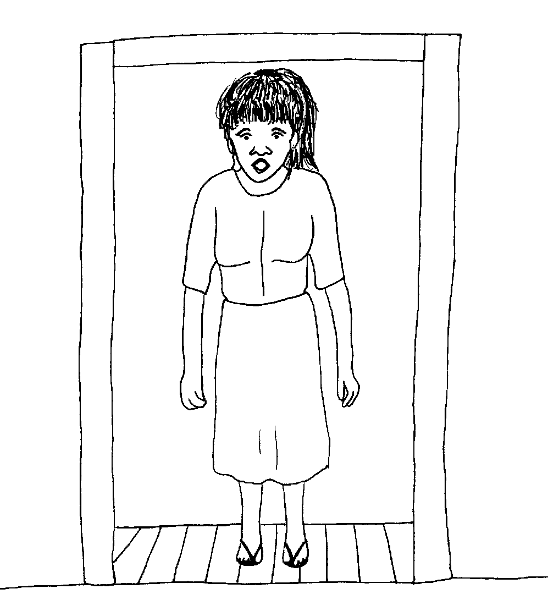
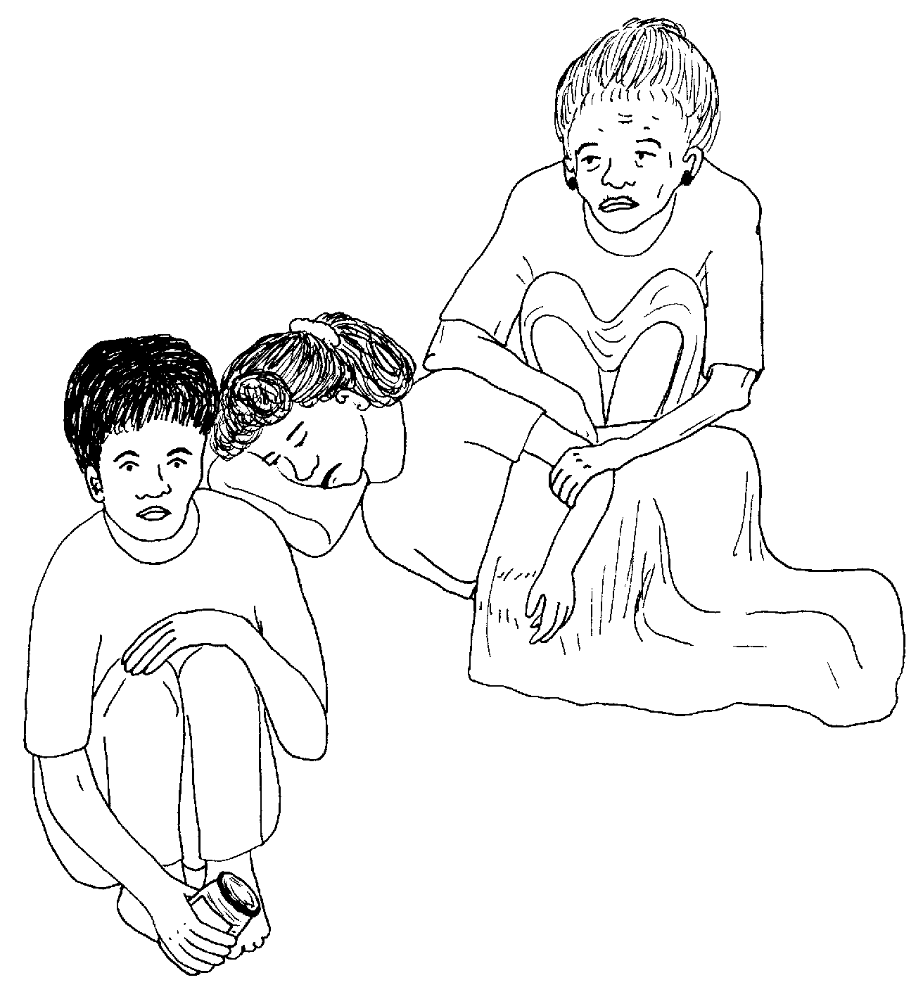
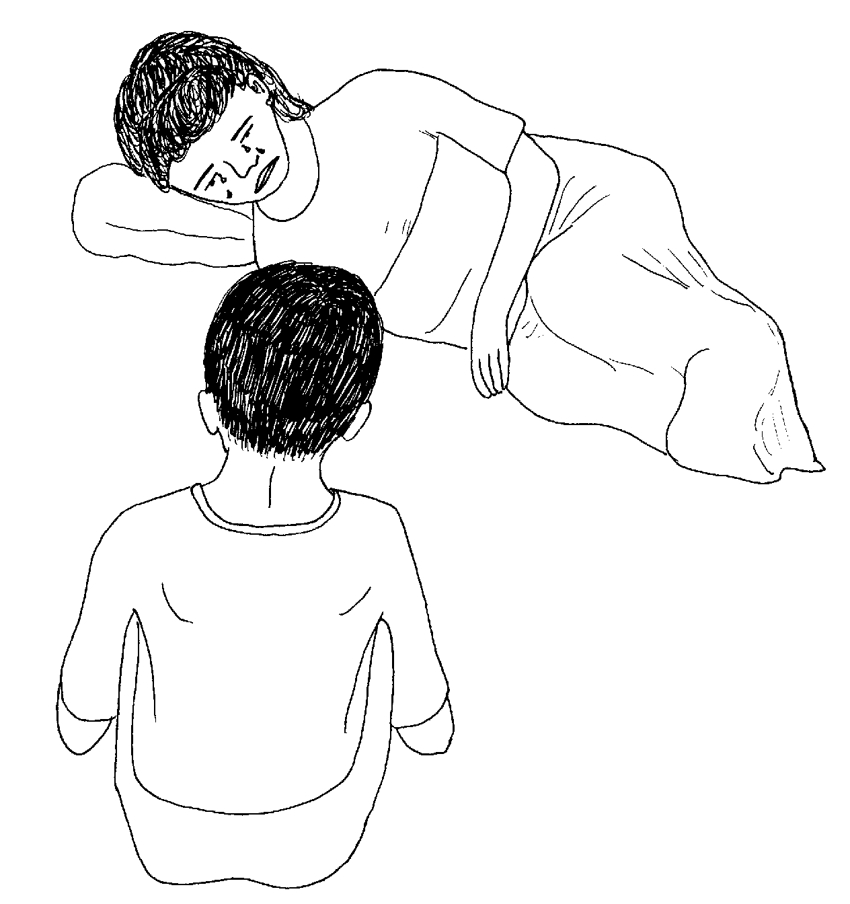
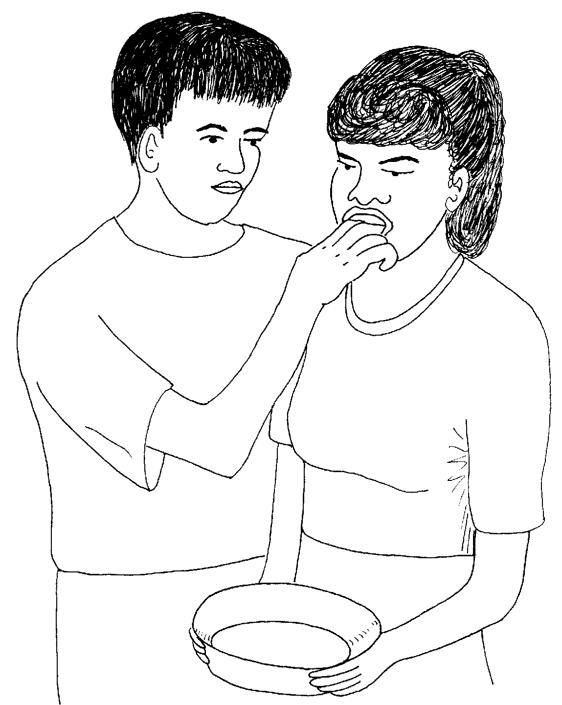
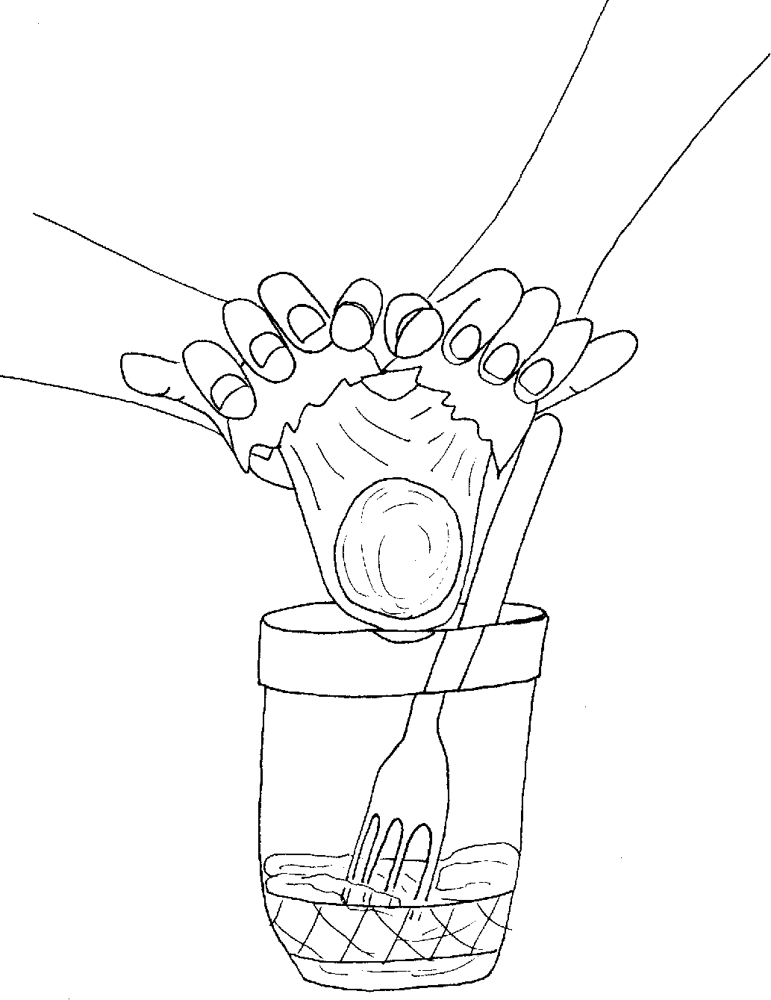
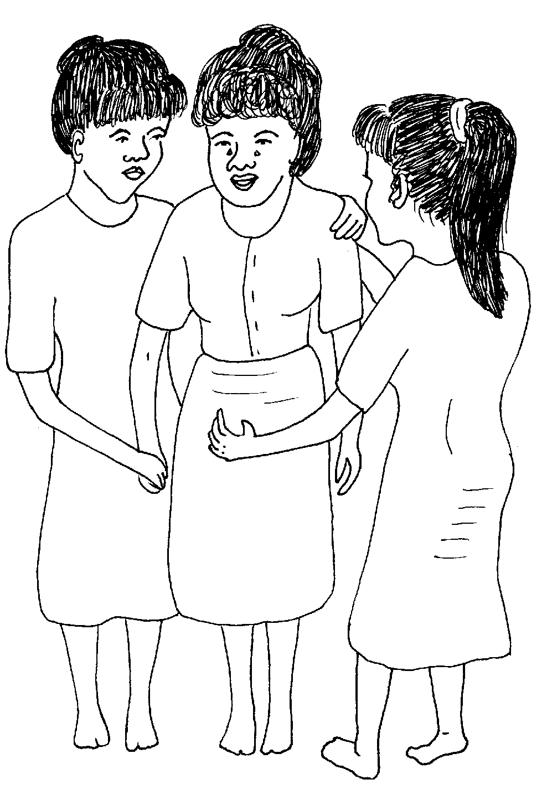

Matigsalug Manobo Healthbooks
Previous Healthbook Up to main Healthbooks page Next Healthbook
Vernacular Lexicon
A
B
BAP
BL
D
E
G
H
I
K
KI
L
LA
LIP
M
N
O
P
PA
R
S
SE
SIN
T
TE
TIN
U
V
W
Y
Z
Healthbooks
Sabekan aldew, migselem-selem miggendiye si Bibing te engki Inuk.
Mig-inse ensi Inuk wey si Lolita diyet kandin ne migkahi te, “Nekey-a se prublima?”
Ne migtabak si Bibing te, “Bulihi key pa nikaniyu su mig-inum teg gilu si Marina!”

Due-rue ne miggendiye ensi Inuk wey si Lolita duma ki Bibing te baley enni Marina.
Ware amana etew ne miglibulung diyet baley enni Marina. Ne ayunan ni Inuk duma ki Bibing te miglasud diyet baley.
Bayew mareet neg tengtengan si Marina ka impeyibat dan diyet seeg. Ne ka asawa rin wey ka iney rin ka migtameng kandin.

Mig-inse si Inuk diyet asawa ni Marina, “Nekey-a ne kalasi teg gilu ka in-inum din?”
Impapitew te asawa ni Marina diye te ki Inuk ka butilya ne migkahi te, “Diye ku nakita seini te lenged din.”
Sika neg gilu ka eggamiten te me etew ne ig-ispri te me uled diyet kamet dan.
Ne mig-inse si Inuk te, “Nalugluhayan e sikandin ka mig-inum due?”
Ne migtabak ka asawa ni Marina te, “Ew, ware pad amana naluhey.”
Ne migkahi si Inuk te, “Keilangan ne kene kig lamu-lamu pasayu te duen pad panahun.”
Ingkahiyan ni Inuk si Marina te meupiya pad keg keuyag din kuntere teg patey rin.

Ingkahiyan din man-e si Marina te keilangan neg bulihan din ka keuhalingen din, su nakanengneng si Inuk te emun keneg paruma-ruma si Marina, kene din egkabulihan.
Ne migdagdahawan din teg peinum te dakel ne weyig si Marina.
Migkahiyan ni Inuk si Bibing te egpakulibulen te atelug wey igpeuyan diyet kandan.
Miggen-genan ni Inuk ka diyet igtubu te dile ni Marina su eyew egpekeileb.

Nataman, migpeinum ni Inuk si Marina te atelug neg pasinundulan te weyig.
Migpabulusan ni Inuk teg samsam ka igtubu te dile ni Marina su eyew egpekeileb wey layun egpeinuma te atelug wey te weyig.
Ne migkahiyan ni Inuk ka duma te, “Keilangan neg tamengan niyu sikandin wey emun ke henduen de due sikandin, keilangan neg uyanen e sikandin diyet huspital.”
Te peg-uli dan e diyet baley ran, mig-insaan ni Lolita si Inuk ne migkahi te, “Mania te impeinum nu sikandin te atelug?”

Ne migkahi si Inuk te, “Emun ke due eg-inum te eggilu, keilangan ne kene tag lamlamuwan teg bawi su eyew keneg pekeempet ka eggilu ne in-inum din diyet lawa rin su eyew keneg kareetan.
“Puun te getek din, kene ded egpekeempet diyet utek wey pusung din ka hilu keg peinumen te atelug ka etew ne mig-inum teg gilu.”
Ne migpabulus migkahi si Inuk te, “Puun te impeileb sikandin, ka langun neg gilu diyet lawa rin egkaawe.
“Piru keilangan ne keneg peileben ka etew emun ke kenad egpakamanumanu wey ke mig-inum te gas, gasulina, asiti, wey kurudu.”
Ne migpabulus man-e sikandin ka migkahi te, “Egpakarereet te bahe seini seg gilu emun keg iileb.”
Ne mig-inse si Lolita te, “Piru ke lain ne kalasi neg gilu ka in-inum din, keilangan neg peileben sikandan?”
Ne migtabak si Inuk ne migkahi te, “Uya, wey keilangan neg uyanen diyet huspital egdagdahawi ka etew ne mig-inum teg gilu emun ke kenad egpakamanumanu.”
Ne migtabak si Inuk te, “Egpeinumen de te atelug wey weyig. Piru ke ware atelug, egkaayun degma neg behayan te harina neg weyihan.”
Ne migpabulus pad man-e sikandin ka migkahi te, “Piru iyan meupiya keg uyanen e sikandan diyet huspital labi e ke masumpit e amana sikandan.”
Ne mig-inse si Lolita te, “Nekey naa ka eggimuwen ta ke dueg inum te gas, wey ke kurudu, te kene bes egkaayun neg peileben sikandan?”
Te ware naluhey, neuyag ded si Marina wey nakapangguhud e sikandin diyet asawa rin wey te duman me alukuy rin ke mania te mig-inum din teg gilu.

Migbubulihan sikandin te me alukuy rin ke nekey kag gimuwen din te prublima rin.
Nekey-a kag gimuwen ta ke dueg inum teg gilu?
Sengekakuwa ne keilangan neg peiileben ta ka etew. Piru nekey-a ne timpu ne keilangan ne kene ta egpeiileben sikandin?
Ken-ua eg-uyana diyet huspital ka mig-inum teg gilu?
Nekey-a kag gimuwen ta keg keulian e ka etew ne mig-inum teg gilu?
Keilangan neg nengnengan niyu pad ke nekey neg gilu ka in-inum din. (Lukib 39) Ke kene amanan masumpit ka mig-inum teg gilu, peileba niyu re sikandin wey egpeinumen te atelug wey weyig. Keilangan ne katatelu wey ke keepat egpekeileb sikandin. (Lukib 43)
(a) Emun ke kenad egpakamanumanu ka etew. (Lukib 46) (b) Wey ke iyan de in-inum ka gas, gasulina, asiti, wey ke kurudu. (Lukib 46)
Emun ke kenad egpakamanumanu sikandin wey ke keneg kabawian te iling te impamawi enni Inuk. (Lukib 47, 49)
Tagse etew neg inum teg gilu, duen naa egpuunan. Ne keilangan neg pepanguhuren ta sikandin diyet me alukuy rin wey ke riyet asawa rin meyitenged te prublima rin su eyew egkabulihan sikandin. (Lukib 51)
This page last updated: 28-Dec-2019
Copyright © 2009-2010